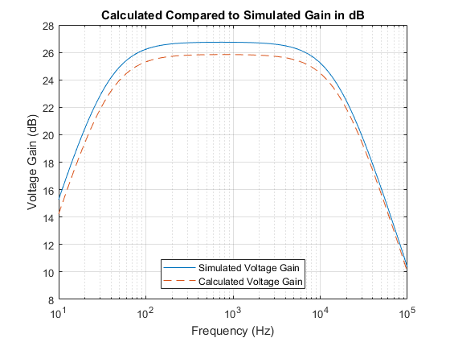

Contents
%Katelyn Charbonneau %EE320 Homework 06 Question 1 clear clc format shortEng format compact
Constant declarations
VDD = 10; vo = 5; CC = 0.022e-6; C1 = 10e-12; C2 = 3.3e-12; C3 = 37e-12; C4 = 3.3e-12; C5 = 22e-12; R = 15e3; RL = 10e6; RG = 100e3; Rsig = 100e3; G = 1/R; GL = 1/RL; GG = 1/RG; Gsig = 1/Rsig; Kn = 270e-6; Vtn = 0.573; Lambdan = 0.0165; Kp = 88e-6; Vtp = -0.647; Lambdap = 0.0219;
Part A.1
%DC Values Print_Header("Vov3 and ID3") a = R*Kp; b = 1; c = abs(Vtp)-VDD; Vov3 = VovQuad(a,b,c) ID3 = Kp*Vov3^2 ID2 = ID3; ID1 = ID2; Print_Header("Vov2/1 and VGG") Vov2 = sqrt(ID2/Kp) Vov1 = sqrt(ID1/Kn) VGG = Vov1+Vtn Print_Header("Q3 Node Voltages") VG3 = ID3*R; VS3 = VDD; VD3 = VG3; VSD3 = VS3 - VD3; VSG3 = VS3 - VG3; Print_Header("Q2 Node Voltages") VG2 = VG3; VS2 = VDD; VD2 = vo; VSD2 = VS2 - VD2; VSG2 = VS2 - VG2; Print_Header("Q1 Node Voltages") VG1 = VGG; VS1 = 0; VD1 = vo; VDS1 = VD1 - VS1; VGS1 = VG1 - VS1;
======= Vov3 and ID3 =======
Vov3 =
2.3099e+000
ID3 =
469.5395e-006
======= Vov2/1 and VGG =======
Vov2 =
2.3099e+000
Vov1 =
1.3187e+000
VGG =
1.8917e+000
======= Q3 Node Voltages =======
======= Q2 Node Voltages =======
======= Q1 Node Voltages =======
Part A.2
Small-signal Parameters
gm1 = 2*ID1/Vov1; gm2 = 2*ID2/abs(Vov2); gm3 = 2*ID3/abs(Vov3); go1 = Lambdan*ID1; ro1 = 1/go1; go2 = Lambdap*ID2; ro2 = 1/go2; go3 = Lambdap*ID3; ro3 = 1/go3;
Part B.1
%Gv(Mid) Print_Header("Gv(mid)") RG_Prime = RG+Rsig; GG_Prime = 1/RG_Prime; GD = go1 + go2 + GL; RD = 1/GD; Gv_mid = (GG_Prime * gm1) / (GG * GD) Gv_mid_dB = Convert_to_dB(Gv_mid)
======= Gv(mid) =======
Gv_mid =
19.6387e+000
Gv_mid_dB =
25.8623e+000
Part B.2
fH and fL
Print_Header("fL") G1inf_L = (GG*Gsig)/(GG+Gsig); G2inf_L = ((go1+go2)*GL)/(go1+go2+GL); T1inf_L = CC/G1inf_L; T2inf_L = CC/G2inf_L; Tau_L = (1/T1inf_L) + (1/T2inf_L); Tau_L = 1/Tau_L; fL = 1/(2*pi*Tau_L) Print_Header("fH") G10_H = GG+Gsig; G20_H = ((go1 + go2 + GL) * (GG + Gsig)) / (gm1 + go1 + go2 + GL + GG + Gsig); G30_H = go1 + go2 + GL; G40_H = ((go1 + go2 + GL) * (gm3 + go3 + G)) / (gm2 + gm3 + go1 + go2 + go3 + G + GL); G50_H = gm3 + go3 + G; T10_H = C1/G10_H; T20_H = C2/G20_H; T30_H = C3/G30_H; T40_H = C4/G40_H; T50_H = C5/G50_H; b1_H = T10_H + T20_H + T30_H + T40_H + T50_H; fH = 1/(2*pi*b1_H)
======= fL =======
fL =
36.8910e+000
======= fH =======
fH =
16.3136e+003
Part C
Transfer Function and Plotting
f_calc_axis = logspace(1, 5, 401)'; s = 2*j*pi.*f_calc_axis; wH = 2*pi*fH; wL = 2*pi*fL; Gv_s = (Gv_mid) ./ ( (1 + s./wH) .* (1 + wL./s) ); Gv_s_dB = 20*log10(abs(Gv_s)); figure(1) sim_dB = csvread("gain_dB.csv"); semilogx(sim_dB(:,1), abs(sim_dB(:,2))) hold on semilogx(f_calc_axis, abs(Gv_s_dB), '--') title("Calculated Compared to Simulated Gain in dB") xlabel("Frequency (Hz)") ylabel("Voltage Gain (dB)") legend("Simulated Voltage Gain", "Calculated Voltage Gain",'location','south') grid on hold off